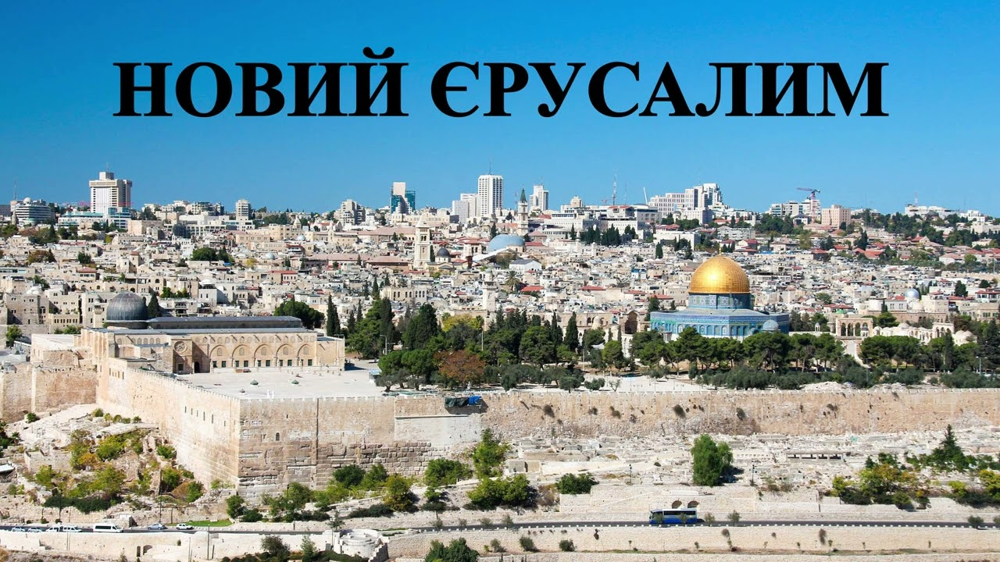
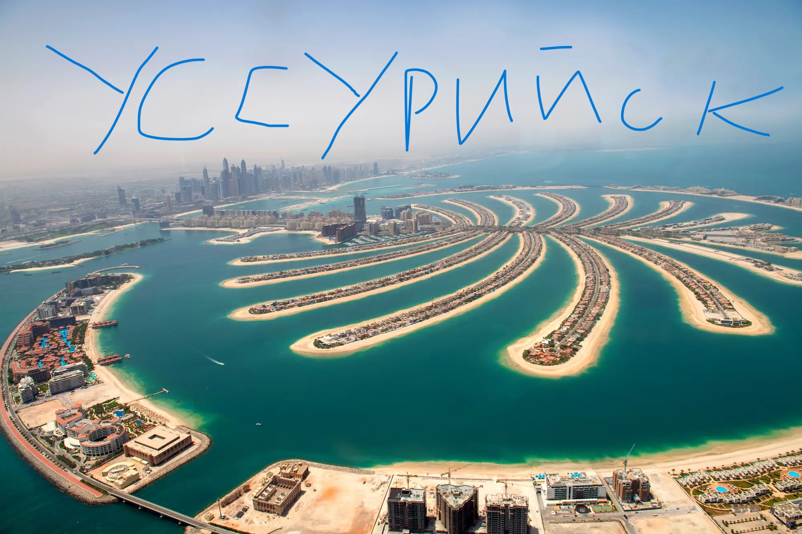
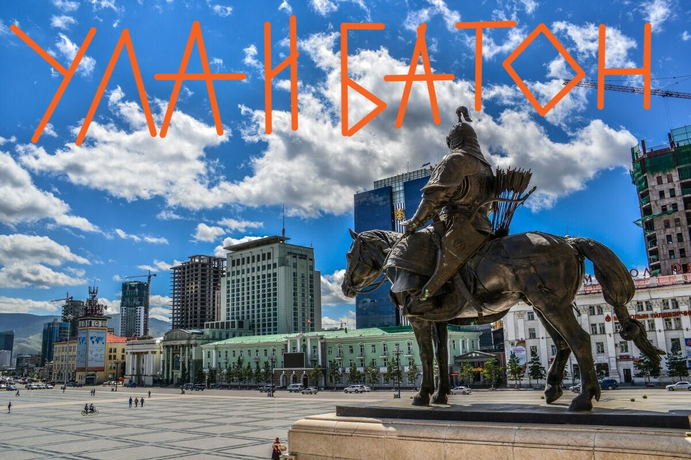
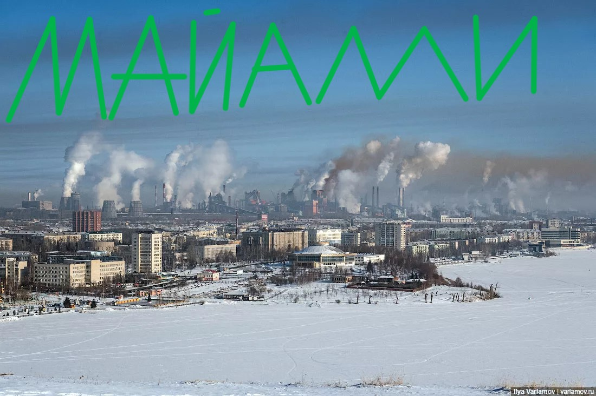
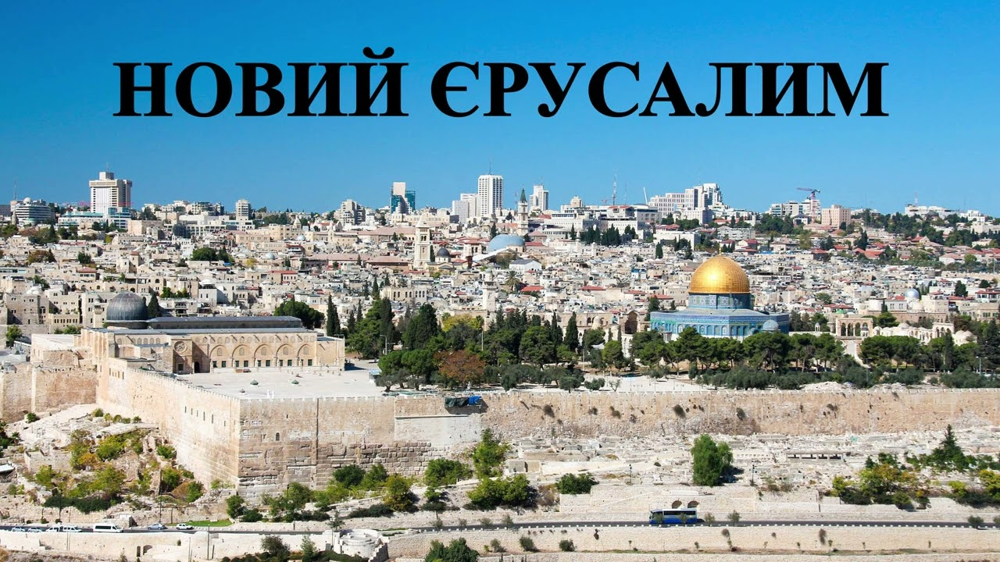
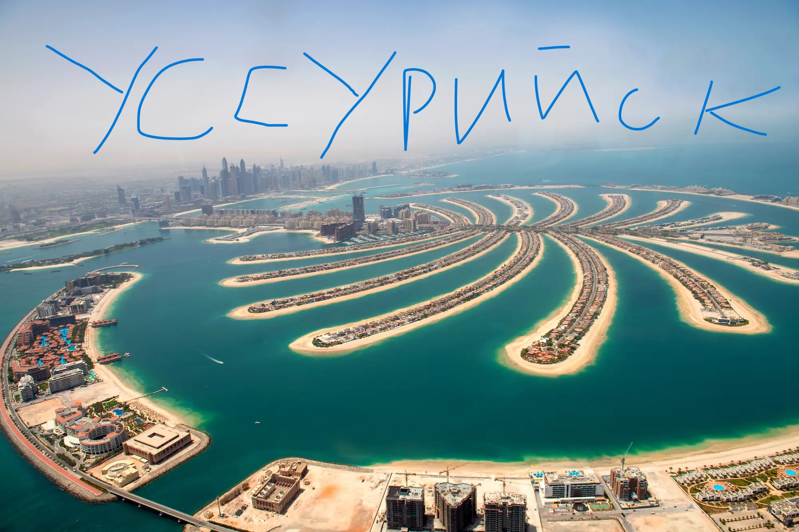
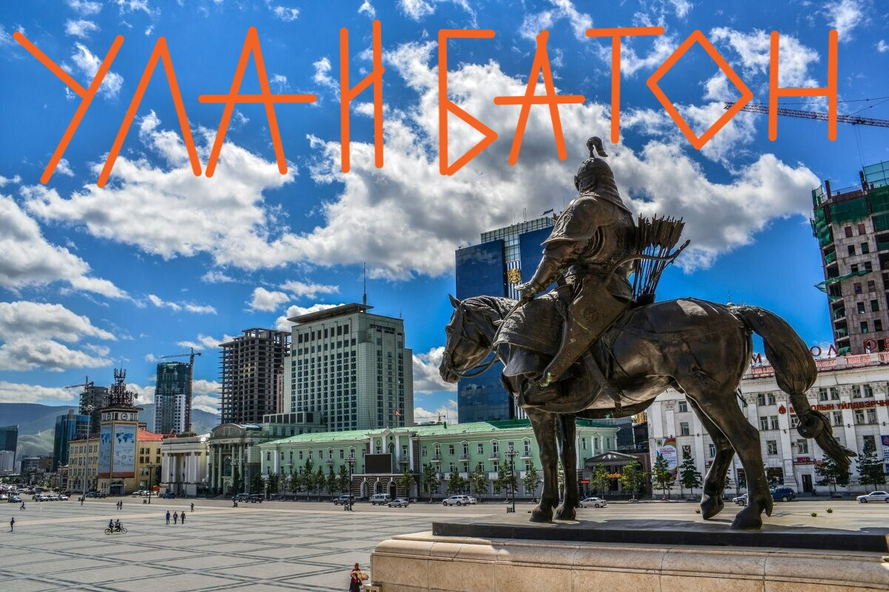
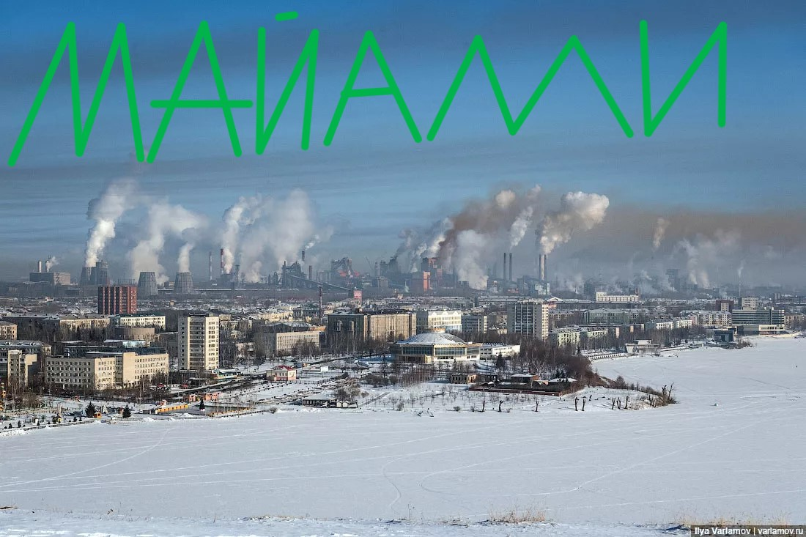
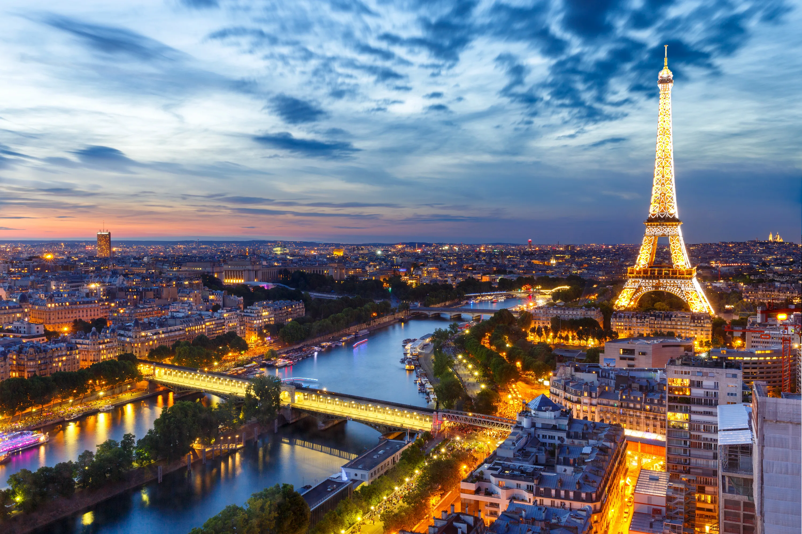
Париж
Пари́ж — столица и крупнейший город Франции. Находится на севере государства, в центральной части Парижского бассейна, на реке Сена. Население — 2 102 650 человек (2023). Центр агломерации Большой Париж (6,6 млн), ядро исторического региона Иль-де-Франс (более 12 млн). Образует коммуну и департамент, разделённый на 20 округов. Относится к глобальным городам и мировым финансовым центрам. Здесь располагаются штаб-квартиры ЮНЕСКО и ряда других международных организаций.
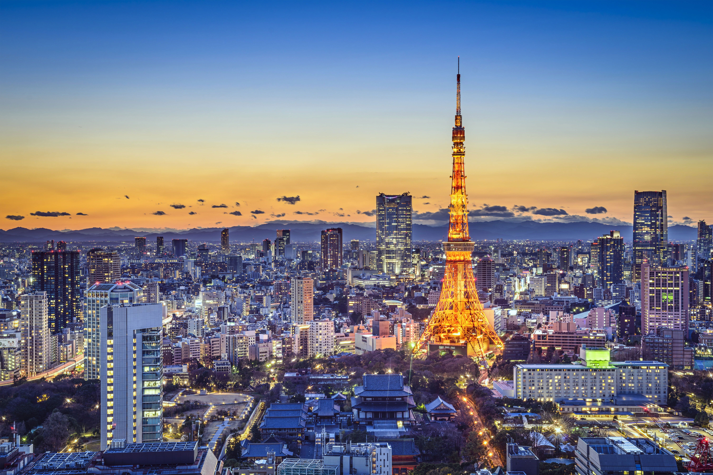
Токио
То́кио (яп. 東京 То:кё:о «Восточная столица») — столица и крупнейший город Японии, её административный, финансовый, промышленный и политический центр. Крупнейшая городская экономика мира. Помимо столицы, Токио также является одной из сорока семи префектур страны. Площадь префектуры составляет 2188,67 км, население — 14 064 696 человек (1 октября 2020), плотность населения — 6426,14 чел./км². По состоянию на 1 августа 2021 года население Токио составляло 14 043 239 человек, что делает Токио префектурой с самым большим населением в Японии. Большой Токио является городской территорией, городской агломерацией и метрополитенским ареалом с самым большим населением в мире, с населением по состоянию на 2016 год в 38 140 000 человек, является частью мегалополиса Пояс Тайхэйё. Токио, являясь самой большой по населению городской агломерацией на Земле, считается самым безопасным городом в мире.
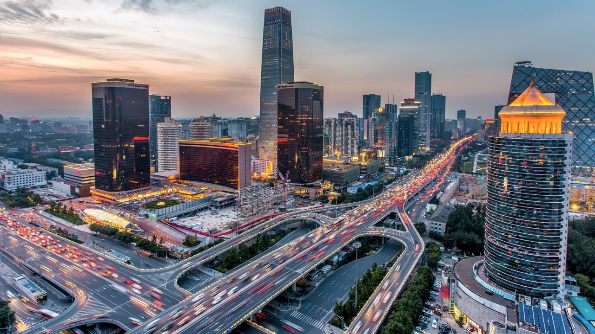
Пекин
Пеки́н (кит. 北京, пиньинь Běijīng, палл. Бэйцзин, буквально: «Северная столица») — столица и один из городов центрального подчинения Китайской Народной Республики. Пекин с трёх сторон окружён провинцией Хэбэй и граничит с Тяньцзинем на юго-востоке. Основанный в 1045 году до н. э., входит в число четырёх древних столиц Китая и является одним из древнейших городов мира.